Introduction
Thank you very much for choosing our theme. We truly appreciate and really hope that you'll enjoy our theme!If you like this theme, Please support us by rating us 5 stars (How to rate?)
{kind=link}
Hostim Software & IT Solutions WordPress Theme is a powerful Easy to use, Mobile friendly, highly customizable SEO friendly IT solutions and SAAS Theme
Theme features
- Responsive Design
- Retina Ready
- Sticky Header
- Blog Page Layout Option
- Truly One Click Demo Importer.
- Powerful Drag and Drop Page Builder (Elementor)
- Powerfull Codestar Framework Admin Panel(save 49$)
- Contact Form 7
Note: All images are just used for Preview Purpose Only. They are not part of the theme and NOT included in the final purchase files.
Need Support?
If you have any questions regarding to theme issues, please email at hellothemetags@gmail.comTheme Installation
Once you purchase the theme from themeforest, you'll be able to load 2 file type.{kind=link}
- All Files and documentation
- Installable Wordpress Theme File
Install theme via Wordpress Dashboard
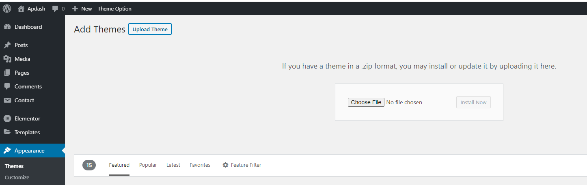- Go to 'Appearance > Theme' section
- Click 'Add New' and select the 'Upload' option
- Upload the zip file
- All Done :)
Install theme via FTP
- Access to the file on your server using ftp editor program
- Go to 'wp-content/themes' folder
- Extract the zip file and put the themename-vxx_xx folder there
- Go to 'Wordpress Dashboard > Appearance > Theme' section to activate the theme
- All Done :)
Install Plugins
After you install the theme, there'll be a list of suggested and recommended plugins at the top of the wordpress dashboard.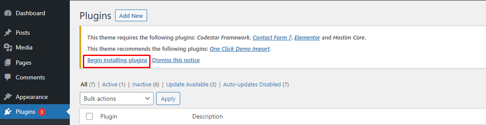
If you already hide it out, you can go to 'Appearance > Install Plugins' section instead too.
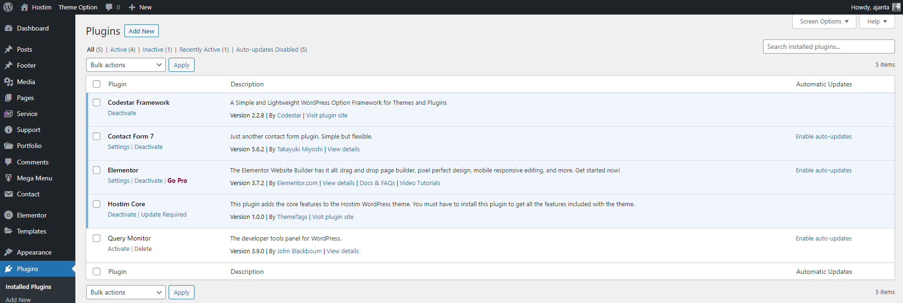
Server Requirements
If you are unsure of how to configure these settings, please contact your hosting provider.
Recommended
- Minimum PHP version 7.3 or greater.
- MySQL version 5.6 or greater OR MariaDB version 10.1 or greater.
- WordPress memory limit of 256 MB or greater.
- HTTPS (SSL) support.
PHP configuration limits
| Setting | Value |
| max_execution_time | 180 |
| max_input_time | 180 |
| memory_limit | 256M |
| post_max_size | 128M |
| upload_max_filesize | 128M |
| max_input_vars | 2000+ |
WordPress memory limit
define( 'WP_MEMORY_LIMIT', '256M' );
WordPress memory can be different from the server – you need to set this regardless of server memory settings
https://codex.wordpress.org/Editing_wp-config.php#Increasing_memory_allocated_to_PHP
Related official WordPress
After full fill all of these requirements then go to the demo import
Importing Demo Content
After activating the theme, there'll be suggested plugin listed at the top (if there aren't, you can go to 'Appearance > Install Plugins' section as well ). Try installing and activating these following plugins ( as it effects the importing process ). You can also install all suggested plugins at this step as well.Note:All of your old data will be remove if you use this function.

Follow the steps mentioned on the screen, then, you'll get the site like the demo :)
Theme Options
All of the theme options work globally but when you use the page option from the page meta then the Theme option will not work for this field.
General Layout
- Preloader
- Display Back To Top
- You can use Custom CSS style if you want overwrite style of theme and your customize code keep in database so you can update theme in future without change
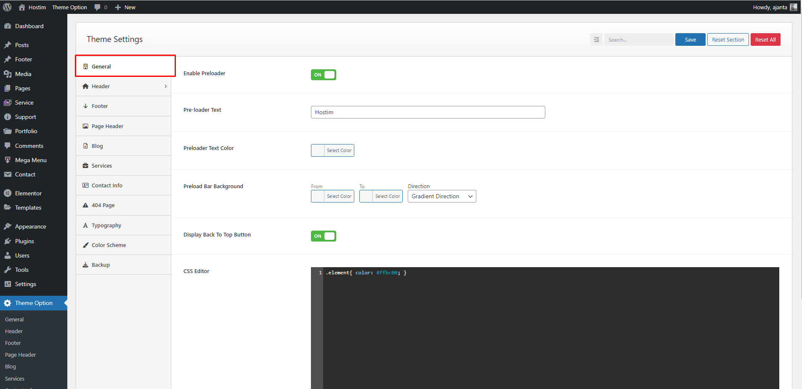
Header Settings
- Enable Header Sticky
- Transparent Menu
- Responsive Menu
- Logo Upload
- Menu Style
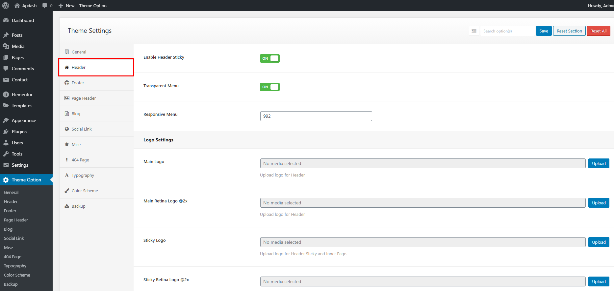
Why Dark Mode is important for website?
Dark mode is important for websites for several reasons:
User Preference: Many users prefer dark mode as it reduces eye strain, especially in low-light conditions. It can provide a more comfortable browsing experience for those who find bright screens overwhelming or have light sensitivity.
Accessibility: Dark mode can improve accessibility for users with visual impairments, including those with conditions like photophobia or color vision deficiencies. The higher contrast between text and background in dark mode can enhance readability.
Energy Efficiency: Dark mode can contribute to energy conservation on devices with OLED or AMOLED screens. These display technologies can individually turn off pixels when displaying black, resulting in reduced power consumption and longer battery life on devices like smartphones and laptops.
Aesthetic Appeal: Dark mode has gained popularity for its modern and sleek appearance. It can provide a unique and visually appealing look to a website, giving it a sense of elegance and sophistication.
How to enable Dark Mode?
Follow the screenshot below
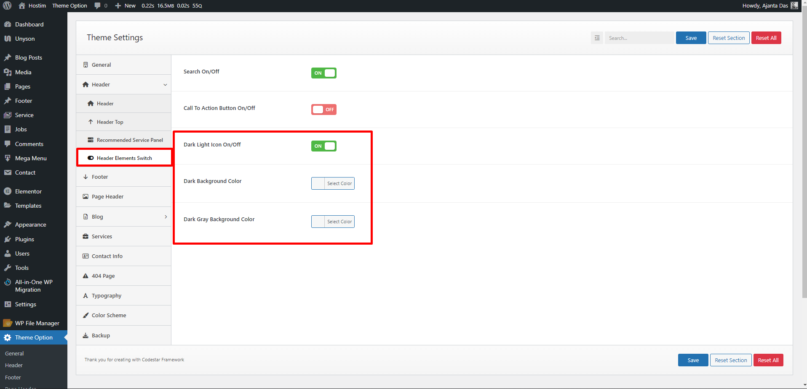By enabling dark mode, by default Blog, Blog details, Header, Footer and most of the elements will cover dark mode automedically. Some elements need to select Drak mode color from Elementor Advance tab. You can follow the video tutorial
Page Header Settings
- You can setup page title, sub-title, background for page title
1. Default Page Setting.
- Default Page Title
- Default Page Description
- Default Page Background
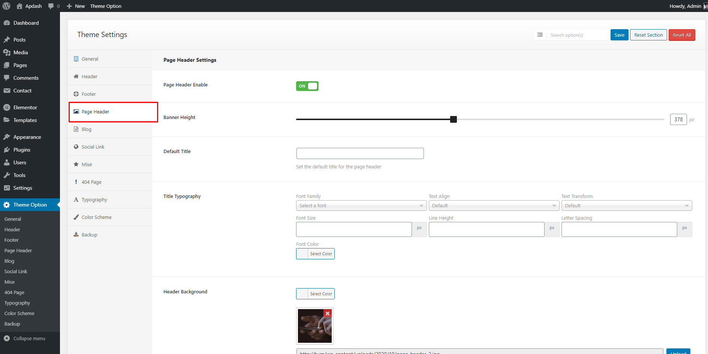
Blog Settings
You can setup blog page display as grid or masonry layout with left sidebar,right sidebar or no sidebar
You can edit blog sidebar by navigate to Appearance > Widgets > Primary
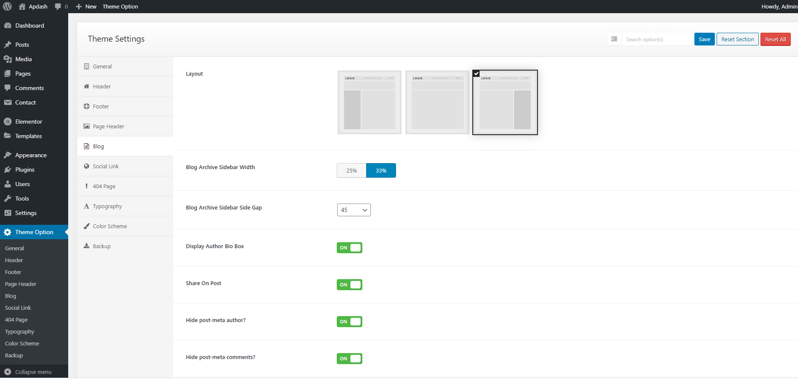
Sidebar Settings
- You can setup Sidebar Info

Typography Settings
You can change font family use default fonts, Google fonts, change font size, font color, heading font size
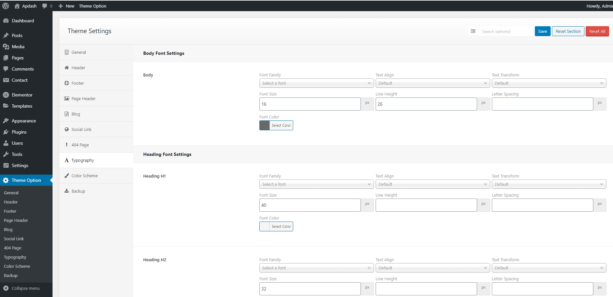
Color Scheme
You can change color for overall site, header, footer.
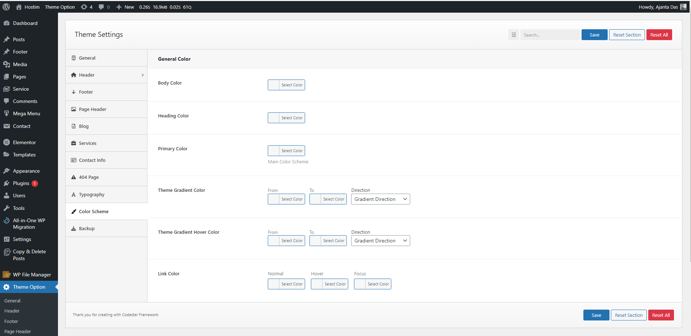
404 Settings
You can setting up 404 Page.
Domain Search
We are using WHOIS library for domain search. You can find available domain by searching in the Domain Search form and you will get a purchase link to the search result
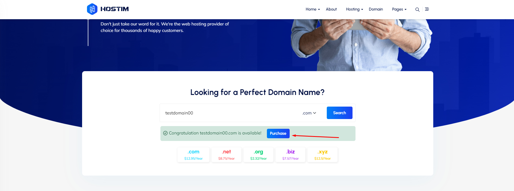Link With WHMCS:
In the Hostim Elementor widget name Hostim Domain Search Form give a of your WHMCS cart url like this
https://whmcs.themetags.com/cart.php?systpl=hostim-professional&carttype=hostim_professional&a=add&domain=register&query=
In the Hostim Domain Search form ajax search and redirect to WHMCS both option are available. If you turn off ajax search from then your query will search with WHMCS site.
You can also see this video for better understanding
WHMCS Pricing Integration
Homepage
- You can assign another page to homepage by go to Dashboard > Settings > Reading > Change Frontpage to any page you want
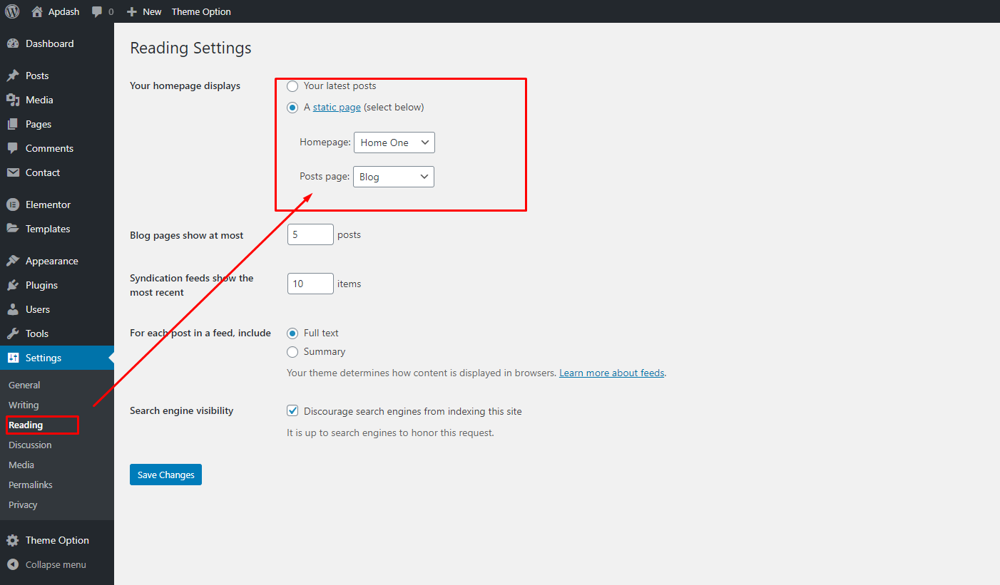
Page Meta
- Page meta option is more powerful then Theme Options. Theme Option field will overwride by page meta option.
-When you use a different logo from page meta option then the theme option will not able to change it. This is example
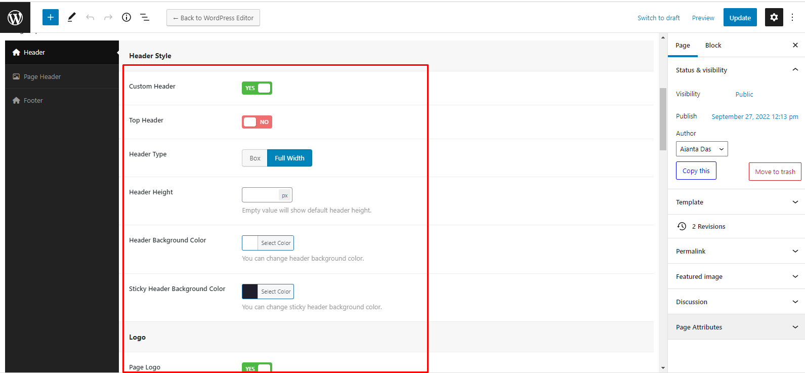
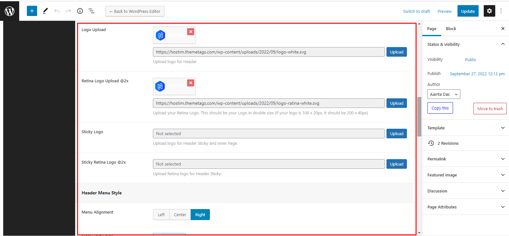
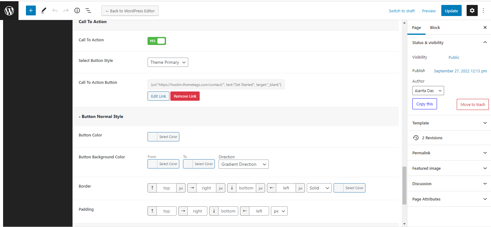
Hostim Service FAQ's
1. Go "Dashboard > Service > Categories" Add new category with a icon.
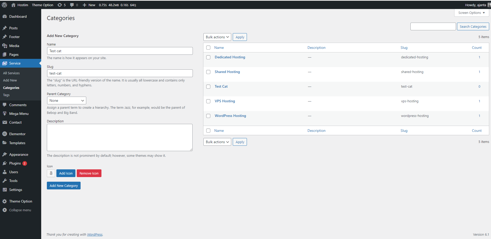2. Insert Hostim Service FAQ Widget. Now you can select category with every FAQ item
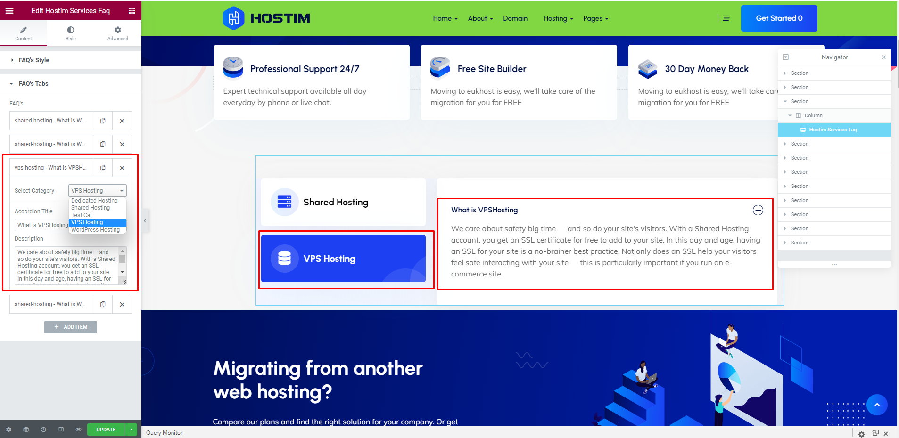For more details show our video tutorials
1. Auto Update using Envato Market #
- Install the Envato Envato Market #.
- Go to themeforest.net > Settings > API Keys.
- Generate an API key and store it in a text file as you will need it shortly.
- Now login into your WordPress admin dashboard
- From left sidebar click on Envato Market.
- As shown in below screenshot fill the API key that you just retrieved from themeforest.net
- Save Settings.
- Once the page refreshed you will see the list of themes you have purchased.
- If there is a new version available you will get the “update Automatically link.
- The theme will be updated to the most recent version.
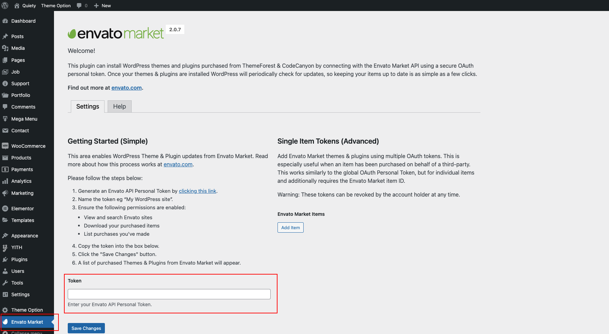
2. Manual Update Through WordPress Admin Panel
- Navigate to Appearance > Themes Activate another theme to deactivate the Hostim theme
- Delete the existing installed theme (old version).
- Unzip the file you just downloaded from ThemeForest and locate the WordPress Theme "Hostim_V1.0.0.zip"
- Still within the Themes section, on the header tab, click on “Install Themes”, then on the header second tab click “Upload”.
- Click “Browse…” and locate the new theme file hostim.zip
- In the “Upgrade existing theme?” option choose “Yes” from the dropdown list.
- Click “Install Now”.
- Click “Activate”.
Socials Settings
You can setting up your Social Networks.
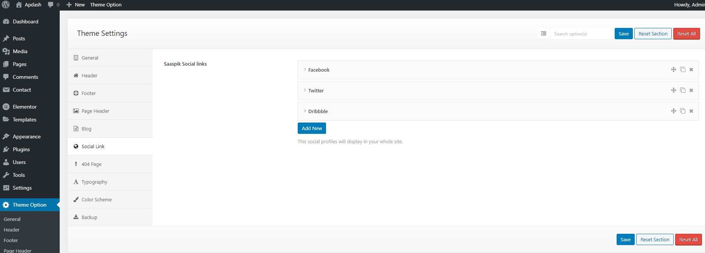